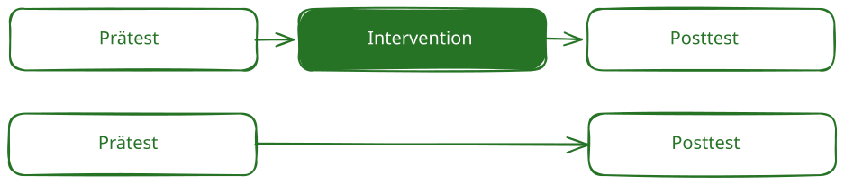

4 Design
Das Studiendesign beschreibt den grundlegenden Aufbau einer Studie. Es legt fest, welche Bedingungen miteinander verglichen werden, wann gemessen wird und wie die Teilnehmenden den Bedingungen zugeordnet werden.
Ein geeignetes Design ermöglicht eine möglichst klare Antwort auf die Forschungsfrage.
Wählen Sie das Design anhand Ihrer Forschungsfrage – nicht danach, welches Design sich am einfachsten durchführen lässt.
4.1 Häufige Designvarianten und Designentscheidungen
Die folgenden Begriffe beschreiben unterschiedliche Aspekte eines Untersuchungsdesigns und können miteinander kombiniert werden.
4.1.1 Ein-Gruppen-Prä-Post-Design
Eine Gruppe wird vor und nach der Intervention untersucht.
Geeignet für: erste Erprobungen und Machbarkeitsstudien.
Einschränkung: Veränderungen können nicht eindeutig auf die Intervention zurückgeführt werden. Auch zeitliche Entwicklungen oder äußere Ereignisse können eine Rolle spielen.
4.1.2 Parallelgruppendesign
Mindestens zwei Gruppen erhalten gleichzeitig unterschiedliche Bedingungen, beispielsweise eine Intervention und regulären Unterricht.

Vorteil: Die Entwicklungen der Gruppen können direkt verglichen werden.
Zu beachten: Die Gruppen sollten zu Beginn möglichst vergleichbar sein.
4.1.3 Randomisiertes kontrollierte Studie
Die Teilnehmenden werden nach dem Zufallsprinzip den Bedingungen zugeordnet.
Vorteil: Randomisierung unterstützt die Vergleichbarkeit der Gruppen und stärkt kausale Schlussfolgerungen.
Weitere Informationen finden Sie in den Kapiteln Kontrollgruppen und Randomisierung.
4.1.4 Clusterdesign
Nicht einzelne Personen, sondern bestehende Gruppen wie Klassen oder Schulen werden zugeordnet.
Ein Clusterdesign ist sinnvoll, wenn eine Intervention im Klassenverband durchgeführt wird oder ein Austausch zwischen den Bedingungen vermieden werden soll.
Zu beachten: Personen innerhalb einer Klasse ähneln sich häufig. Dies muss bei Stichprobenplanung und Auswertung berücksichtigt werden.
4.2 Messwiederholung oder unterschiedliche Gruppen?
Bei einer Messwiederholung werden dieselben Personen zu mehreren Zeitpunkten untersucht, etwa vor und nach einer Intervention.
Bei einem Zwischen-Gruppen-Vergleich werden unterschiedliche Gruppen miteinander verglichen.
Beides kann kombiniert werden: In einem Prä-Post-Kontrollgruppendesign werden mehrere Gruppen jeweils vor und nach der Intervention untersucht.
4.3 Weitere Designformen und zeitliche Anordnungen
Für besondere Forschungsfragen kommen unter anderem infrage:
- Crossover-Designs
- faktorielle Designs
- Längsschnittdesigns
- Single-Case-Designs
- Stepped-Wedge-Designs
Diese Designs erfordern eine weiterführende methodische Planung.
Ein komplexes Design ist nicht automatisch ein gutes Design. Entscheidend ist, ob Forschungsfrage, Vergleichsbedingung, Zuweisung und Messzeitpunkte zusammenpassen.